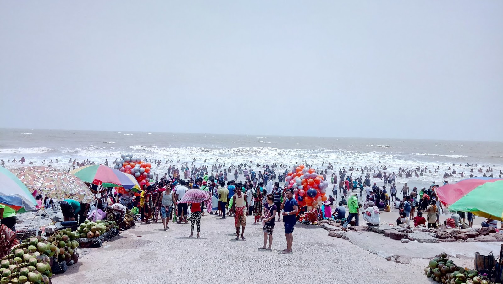
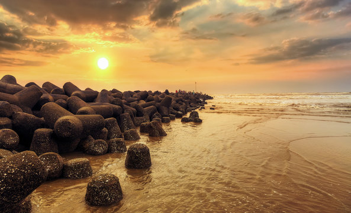
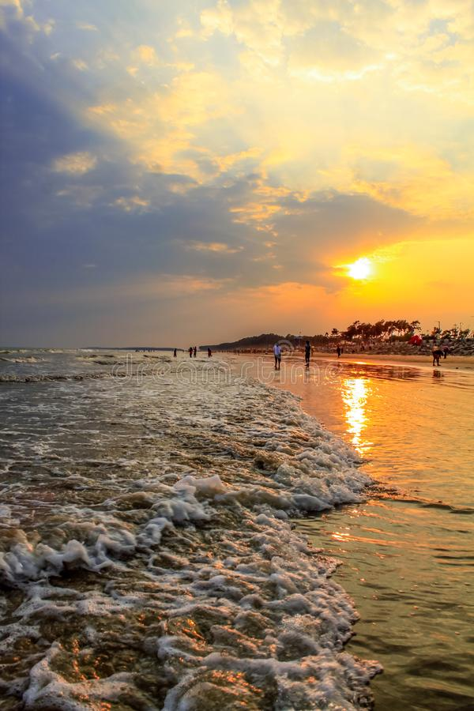
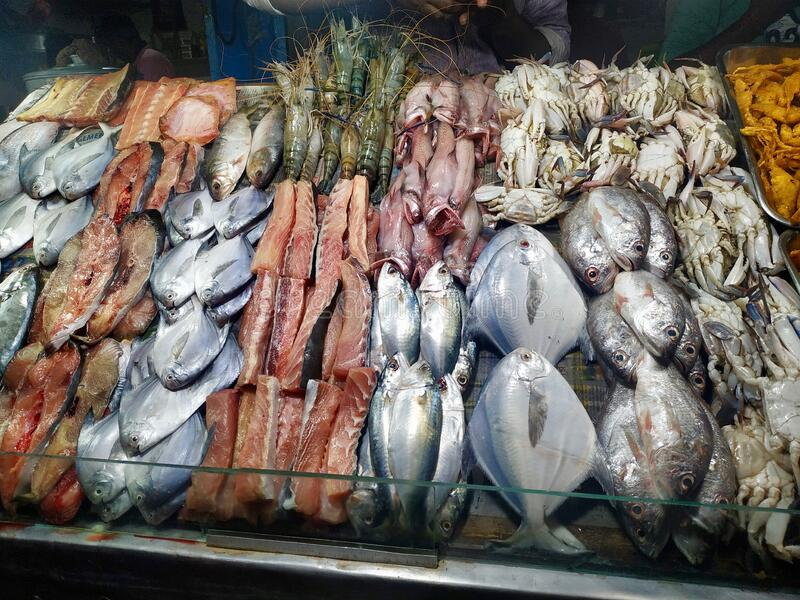
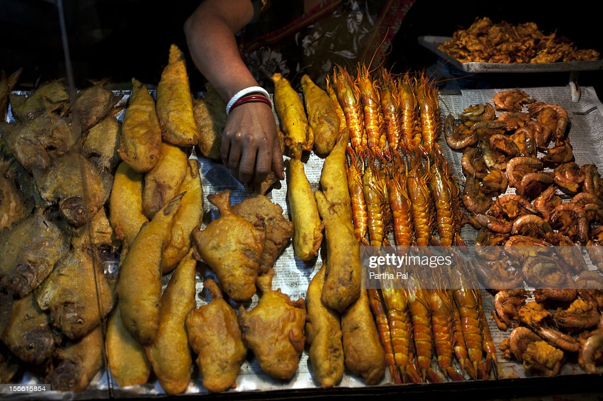
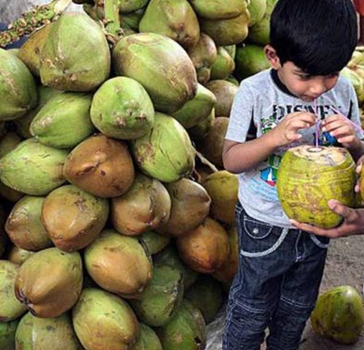

Digha is a coastal resort town in the east Indian state of West Bengal. The dune-backed Old Digha Sea Beach faces the Bay of Bengal. Close by, the Marine Aquarium and Regional Centre (MARC) is home to sharks, rays and sea snakes. To the west, inland from sandy New Digha Sea Beach, leafy Amarabati Park surrounds a lake. West of town, the white-domed Chandaneswar Shiv Temple is dedicated to the Hindu god Shiva.
Digha police station has jurisdiction over part of Ramnagar I (part) CD Block. It covers an area of 3,153 km2 with a population of 35,054. It is located in old Digha.
Digha Mohana Coastal police station is located in Digha.
93.55% of the population of Contai subdivision live in the rural areas. Only 6.45% of the population live in the urban areas and it is considerably behind Haldia subdivision in urbanization, where 20.81% of the population live in urban areas.
Location:
It is located 183 km (114 mi) from Kolkata/Howrah via Mecheda and 234 km (145 mi) via Kharagpur, this proximity has probably helped this small hamlet to emerge as a weekend getaway with number of hotels and tourist lodges. Digha is connected to Kolkata/Howrah by a highway and a rail-link via Tamluk. Now many trains including Howrah-Digha Super AC express, Tamralipta express, Kandari express and EMU locals from Santragacchi via Mecheda and Tamluk run between Digha and Howarh and other stations in eastern India.It is also located under Contai Sub division.



Tourism:
Beach town situated on the shores of Bay of Bengal, Digha is a popular tourist destination known for its untouched beaches and scenic views, especially among people in West Bengal.
Digha is a one-stop destination for families looking forward to spend a pleasurable weekend. One of the best features of this hamlet is its varied and diverse tourist attraction spots. Known for its magnificent beaches, religious temples and high-tech research centers and museums, this most popular sea resort of West Bengal has a lot to offer for people of all age groups. Digha's sceneries can also offer you the pleasure experienced in witnessing areas that have minimal human impact and are relatively untouched.
Foods:
Digha is an amazing holiday location if you are looking for a quick getaway for a day or two. If you’re looking for some relaxing time amidst fresh air and water and with plenty of amazing food, Digha is the place for you!
Food is an inseparable element of culture! And if you love getting close to the cultural side of the destinations your visit, knowing and tasting the food dishes of those places would certainly help. Here are some of the most loved Digha food that you must also taste to know the heart of the city:
- The Oh-So Delicious Pomfret Fry
- Crabs
- Tiger Prawns
- Pabda Fish Fry and Padba Fish Curry
- Luchi And Torkari or Sabji
- Coconut Water


